MAS291 · Xác suất Thống kê
MAS291 — Xác suất Thống kê
Ghi chú mười chương của Applied Statistics and Probability for Engineers (Montgomery & Runger), sắp theo ba kỳ Progress Test. Mọi ví dụ đều giải hết số — không có bước nào bỏ trống cho bạn "tự tính".
Course Materials
- Slides — ZIP · 6,3 MB
- Slides (bản .rar cũ) — RAR · 6,1 MB
- Exercises — PDF · 1,2 MB
- Formula Sheet — PDF · 428 KB
- Book — PDF · 8,9 MB
PT1 · Chương 1 – 3
Chapter 1: Introduction and Role of Statistics in Engineering
Xác suất thống kê ứng dụng trong kỹ thuật và công nghệ để phân tích dữ liệu, đưa ra kết luận và giải quyết vấn đề.
Phương pháp thống kê chính
- Descriptive statistics (thống kê mô tả): Tóm tắt, trình bày dữ liệu bằng các đồ thị, bảng biểu và các đại lượng đặc trưng.
- Inferential statistics (thống kê suy luận): Mô tả, suy đoán tính chất một tổng thể dựa trên 1 mẫu, sử dụng trong việc kiểm định giả thuyết và ước lượng tham số.
Các khái niệm quan trọng
- Data: Thông tin từ quan sát, đo lường.
- Population: Tổng thể nghiên cứu.
- Parameter: Đặc trưng của Population.
- Sample: Tập con của Population.
- Statistic: Đặc trưng của Sample, ước lượng Parameter.
- => Chúng ta sử dụng Statistic (Sample) để suy luận Parameter (Population).
- VD: Xác định tỉ lệ lỗi các sản phẩm (Population) trong quá trình sản xuất, ta lấy 300 sản phẩm (Sample) để kiểm tra.
Phân loại dữ liệu
- Qualitative data (dữ liệu định tính): Không thể đo lường bằng số, như màu sắc, loại vật liệu, ...
- Quantitative data (dữ liệu định lượng): Có thể đo lường bằng số, như chiều cao, trọng lượng, ...
- Discrete data (dữ liệu rời rạc): Có thể đếm được, như số lượng sản phẩm lỗi, số lần thử nghiệm, ...
- Continuous data (dữ liệu liên tục): Có thể nhận bất kỳ giá trị nào trong một khoảng, như thời gian, nhiệt độ, ...
Phương pháp thu thập dữ liệu
- Observational study: Nghiên cứu quan sát không
can thiệp vào đối tượng.
- VD: Quan sát hành vi ăn uống của học sinh trong căng tin mà không thay đổi thực đơn hoặc môi trường.
- Experiment: Nghiên cứu có can thiệp và kiểm
soát các yếu tố.
- VD: Thử nghiệm tác động của một loại thuốc mới bằng cách chia ngẫu nhiên bệnh nhân thành hai nhóm, một nhóm dùng thuốc và một nhóm dùng giả dược.
- Retrospective study: Nghiên cứu dựa trên dữ
liệu trong quá khứ.
- VD: Nghiên cứu mối liên hệ giữa hút thuốc và ung thư phổi bằng cách phân tích hồ sơ y tế của bệnh nhân đã được chẩn đoán trong quá khứ.
- Prospective study: Nghiên cứu theo dõi đối
tượng trong tương lai.
- VD: Theo dõi một nhóm người không hút thuốc trong 20 năm để xem liệu họ có phát triển bệnh tim hay không.
Ứng dụng trong kỹ thuật
- Kiểm soát chất lượng sản phẩm
- Tối ưu hóa quy trình sản xuất
- Phân tích độ tin cậy hệ thống
- Dự đoán tuổi thọ thiết bị
- Thiết kế và phân tích thí nghiệm
Ví dụ minh họa
Hiển thị ví dụ
Kiểm soát chất lượng chip điện tử
Nhà máy sản xuất chip điện tử đảm bảo tỷ lệ lỗi dưới 1% bằng cách:
- Thu thập dữ liệu tỷ lệ lỗi các lô sản xuất.
- Phân tích nguyên nhân gây lỗi.
- Áp dụng biểu đồ kiểm soát theo dõi quá trình.
- Dự đoán tỷ lệ lỗi bằng phân tích hồi quy.
Chapter 2: Probability
2.1 Sample spaces and events (Không gian mẫu và biến cố)
Random experiment (Thí nghiệm ngẫu nhiên)
Là một thực nghiệm để dẫn tới những kết quả khả thi.
Sample space (Không gian mẫu)
Chứa tất cả những kết quả có khả năng xảy ra, ký hiệu là S.
Tree diagram (Biểu đồ cây)
Không gian mẫu có thể được biểu diễn dạng biểu đồ cây.
Event (Biến cố)
Tập con của không gian mẫu.
Set Operations (Phép toán tập hợp)
- Union (hợp): A ∪ B, đúng khi nằm trong A hoặc B hoặc cả hai
- Intersection (giao): A ∩ B, đúng khi nằm trong cả hai
- Complement (phần bù): A', ngược lại với A
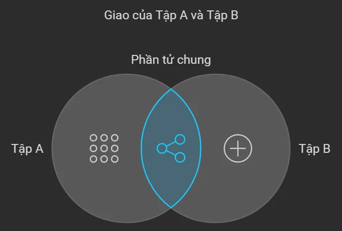
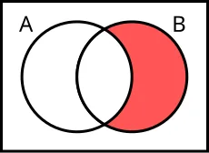
Counting techniques (Kỹ thuật đếm)
Multiplication Rule (Quy tắc nhân)
Trong một quy trình gồm nhiều bước, nếu mỗi bước có một số lựa chọn nhất định, tổng số cách thực hiện toàn bộ quy trình được tính bằng tích của số lựa chọn ở mỗi bước.
Hiển thị ví dụ
Question: Ta có 4 cái áo khác nhau và 3 cái quần khác nhau trong tủ đồ. Có bao nhiêu cách để tạo ra 1 bộ đồ đủ áo và quần.
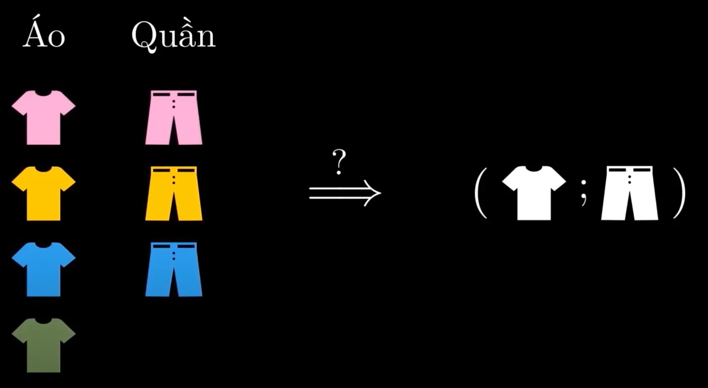
Answer:
Tổng số mã sản phẩm có thể có là:
4 x 3 = 12 bộ
Giải thích: Mỗi cách chọn 1 cái áo đều có 3 cách chọn quần. Ta có thể hiểu quy tắc nhân là phép nhân các bước chọn để đạt được kết quả.
Permutations (Hoán vị)
Hoán vị đề cập đến số cách sắp xếp một tập hợp các phần tử theo một thứ tự cụ thể. Khi chọn r phần tử từ n phần tử và quan tâm đến thứ tự, ta sử dụng công thức nPr. Điều này thường áp dụng trong các tình huống như sắp xếp người trong một hàng hoặc chọn các vị trí trong một đội.
Hiển thị ví dụ
Question: Có bao nhiêu cách để sắp xếp 3 cuốn sách trên kệ nếu chúng ta có 5 cuốn sách khác nhau để chọn?
Answer:
Công thức tính hoán vị:
Trong đó:
- n là tổng số phần tử
- r là số phần tử cần sắp xếp
- Ta cần chọn 3 cuốn sách từ 5 cuốn sách và sắp xếp chúng theo thứ tự.
- Sử dụng công thức hoán vị: nPr = n! / (n-r)!
- Trong trường hợp này, n = 5 (tổng số sách) và r = 3 (số sách cần chọn và sắp xếp)
- Số cách sắp xếp 3 cuốn sách là: 5P3 = 5! / (5-3)! = 5! / 2! = 5 * 4 * 3 = 60
Kết luận: Có 60 cách khác nhau để sắp xếp 3 cuốn sách trên kệ.
Combination (Tổ hợp)
Tổ hợp liên quan đến việc chọn một nhóm phần tử từ một tập hợp lớn hơn mà không quan tâm đến thứ tự. Khi chọn r phần tử từ n phần tử mà không cần quan tâm đến thứ tự, ta sử dụng công thức nCr. Điều này thường được áp dụng trong các tình huống như chọn một nhóm người từ một tập hợp lớn hơn để thực hiện một nhiệm vụ, trong đó vai trò cụ thể của từng người không quan trọng.
Hiển thị ví dụ
Question: Một lớp học có 30 học sinh, trong đó có 10 học sinh giỏi. Chúng ta chọn ngẫu nhiên 3 học sinh để tham gia cuộc thi. Tính xác suất cả 3 học sinh được chọn đều là học sinh giỏi.
Answer:
Để giải quyết bài toán này, ta sử dụng tổ hợp để tính:
- Số cách chọn 3 học sinh giỏi từ 10 học sinh giỏi
- Số cách chọn bất kỳ 3 học sinh từ 30 học sinh
Công thức tính tổ hợp:
Trong đó:
- n là tổng số phần tử
- r là số phần tử cần chọn
Bước 1: Tính số cách chọn 3 học sinh giỏi từ 10 học sinh giỏi
10C3 = 10! / (3! * 7!) = 120
Bước 2: Tính số cách chọn bất kỳ 3 học sinh từ 30 học sinh
30C3 = 30! / (3! * 27!) = 4060
Bước 3: Tính xác suất cả 3 học sinh được chọn đều là học sinh giỏi
P(cả 3 học sinh đều là học sinh giỏi) = 120 / 4060 ≈ 0.0296
Kết luận: Xác suất cả 3 học sinh được chọn đều là học sinh giỏi là khoảng 2.96%.
2.2 Probability
Xác suất của một biến cố trong một phép thử với n khả năng xảy ra như nhau là 1/n.
Hiển thị ví dụ
Question: Trong một phép thử tung đồng xu, tính xác suất đồng xu ra mặt sấp.
Answer:
Vì có 2 khả năng xảy ra (mặt sấp hoặc mặt ngửa), xác suất ra mặt sấp là:
2.3 Addition Rules
Quy tắc cộng xác suất cho hai sự kiện A và B:
Hiển thị ví dụ
Question: Xét một bộ bài 52 lá, tính xác suất rút được một lá là quân bích hoặc quân át.
Answer:
Có 13 lá quân bích và 4 lá quân át, trong đó có 1 lá vừa là quân bích vừa là quân át. Áp dụng quy tắc cộng:
\[P(bích \cup át) = \frac{13}{52} + \frac{4}{52} - \frac{1}{52} = \frac{16}{52} = \frac{4}{13}\]
2.4 Conditional Probability and Independence
Xác suất có điều kiện của sự kiện B khi biết A đã xảy ra:
Nếu A và B là hai sự kiện độc lập:
Hiển thị ví dụ
Question: Một hộp có 5 bi đỏ và 3 bi xanh. Lấy ngẫu nhiên 1 bi và nó là bi đỏ. Tính xác suất rút được bi xanh ở lần rút thứ hai, trong hai trường hợp: (a) có hoàn lại (with replacement) và (b) không hoàn lại (without replacement).
Answer:
(a) Có hoàn lại. Bi đỏ được bỏ lại vào hộp, nên lần rút thứ hai đối diện đúng 8 bi ban đầu:
Hai lần rút độc lập: biết kết quả lần đầu không cho ta thêm thông tin gì về lần sau. Đây chính là định nghĩa của độc lập ở công thức \(P(A|B) = P(A)\) phía trên.
(b) Không hoàn lại. Sau lần rút đầu tiên, hộp còn 7 bi, trong đó vẫn có 3 bi xanh (vì bi bị lấy ra là bi đỏ):
Ở đây các sự kiện không độc lập: việc rút bi đỏ ở lần đầu làm mẫu số giảm từ 8 xuống 7, nên nó ảnh hưởng đến xác suất rút bi xanh ở lần sau.
Đây là chỗ đề thi gài nhiều nhất. Đọc kỹ hai chữ "hoàn lại": có hoàn lại thì dùng tích các xác suất độc lập, không hoàn lại thì mẫu số phải trừ đi từng lần rút.
2.5 Independence & Mutually Exclusive
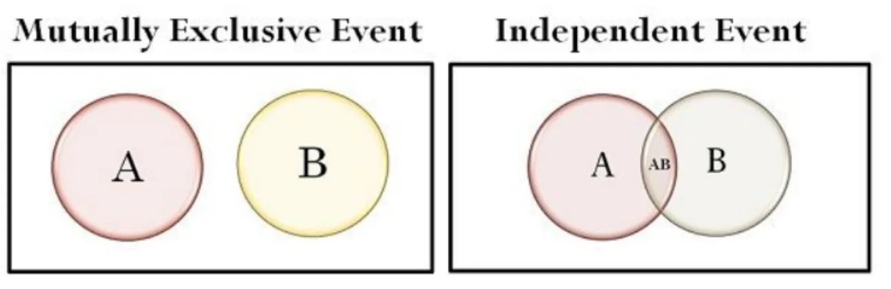
Nếu A và B là hai sự kiện độc lập:
Nếu A và B là hai sự kiện xung khắc:
2.6 Multiplication and Total Probability Rules
Quy tắc nhân xác suất:
Hiển thị ví dụ
Câu hỏi: Một hộp chứa 4 viên bi màu xanh dương và 2 viên bi màu xanh lá cây. Một viên bi được rút ngẫu nhiên từ hộp không hoàn lại (without replacement) và màu của nó được ghi lại. Sau đó, một viên bi thứ hai được rút ra.
Tìm xác suất rằng viên bi đầu tiên là màu xanh lá cây và (and) viên bi thứ hai là màu xanh dương?
Answer:
Gọi A là sự kiện bốc ra viên đầu tiên là xanh lá.
Gọi B là sự kiện bốc ra viên thứ hai là xanh dương.
Xác suất rút được bi xanh lá đầu tiên là 2/6, và sau đó rút được bi dương thứ hai là 4/5:
Total Probability Rules:
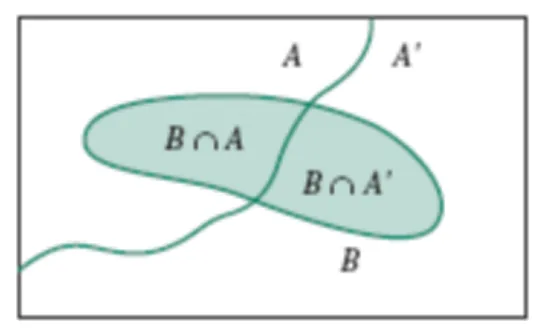
Phân chia sự kiện thành các phần xung khắc nhau (Tức là A và A' ko thể diễn ra đồng thời)
Với mọi sự kiện A và B
Câu hỏi: Tương tự ở trên.
Tìm xác suất viên bi thứ hai là màu xanh dương?
Answer:
Sẽ bằng tổng xác suất lần đầu bốc được bi xanh dương và sau đó bốc được bi xanh dương cộng với lần đầu bốc được bi xanh lá và lần sau bốc được bi xanh dương.
2.7 Bayes' Theorem
Công thức Bayes:
Hiển thị ví dụ
Question: Một xét nghiệm y tế phát hiện đúng bệnh trong 95% ca có bệnh (độ nhạy 95%), và cho kết quả dương tính sai ở 2% người khỏe mạnh (tỷ lệ dương tính giả 2%). Tỷ lệ mắc bệnh trong dân số là 0.01%. Tính xác suất một người thật sự mắc bệnh khi kết quả xét nghiệm là dương tính.
Answer:
Đặt \(D\) = có bệnh, \(+\) = xét nghiệm dương tính. Đề cho: \(P(D) = 0.0001\), \(P(+|D) = 0.95\), \(P(+|D') = 0.02\), suy ra \(P(D') = 0.9999\).
Bước 1 — tính \(P(+)\) bằng quy tắc xác suất toàn phần (đây là mẫu số, và là bước hầu hết mọi người quên):
Bước 2 — áp dụng định lý Bayes:
Kết luận: Chỉ khoảng 0.47% — tức là trong 1000 người có kết quả dương tính, chỉ khoảng 5 người thật sự mắc bệnh.
Con số này gây sốc nhưng đúng, và lý do nằm ở chỗ so sánh hai số hạng của mẫu số: 0.000095 (dương tính thật) so với 0.019998 (dương tính giả). Bệnh quá hiếm nên số người khỏe mạnh bị báo sai nhiều gấp 210 lần số người có bệnh bị bắt đúng. Một xét nghiệm "chính xác 95%" vẫn có thể gần như vô dụng nếu bệnh đủ hiếm — đó là toàn bộ ý nghĩa của định lý Bayes: \(P(+|D)\) và \(P(D|+)\) là hai con số hoàn toàn khác nhau, và lẫn hai chiều này với nhau có tên riêng trong thống kê: ngộ nhận tỷ lệ nghịch đảo (base rate fallacy).
Chapter 3: Discrete Random Variables and Probability Distributions
3.1 Discrete Random Variables
Biến ngẫu nhiên rời rạc (Discrete Random Variables) là một loại biến ngẫu nhiên có thể nhận một số lượng giá trị đếm được hoặc hữu hạn trong một khoảng xác định.
Các công thức quan trọng:
-
Mean (Kỳ vọng):
\[E(X) = \sum_{i=1}^{n} x_i \cdot P(X = x_i)\]
-
Variance (Phương sai):
\[V(X) = E[(X - E(X))^2] = \sum_{i=1}^{n} (x_i - E(X))^2 \cdot P(X = x_i) = E(X^2) - [E(X)]^2\]
-
Tính chất tuyến tính của kỳ vọng:
\[E(aX + bY) = a \cdot E(X) + b \cdot E(Y)\]
-
Tính chất của phương sai:
\[V(aX + b) = a^2 \cdot V(X)\]
Hiển thị ví dụ
Ví dụ: Số mặt xuất hiện khi tung một con xúc xắc công bằng là một biến ngẫu nhiên rời rạc. Nó chỉ có thể nhận các giá trị nguyên từ 1 đến 6.
Tính toán:
Kỳ vọng: \(E(X) = \frac{1+2+3+4+5+6}{6} = 3.5\)
Phương sai: \(V(X) = E(X^2) - [E(X)]^2 = \frac{1^2+2^2+3^2+4^2+5^2+6^2}{6} - 3.5^2 \approx 2.92\)
3.2 Probability Distributions and Probability Mass Functions
Hàm khối xác suất (Probability Mass Function - PMF):
Hàm phân phối tích lũy (Cumulative Distribution Function - CDF):
Các tính chất quan trọng của CDF:
- \(0 \leq F(x) \leq 1\) với mọi x
- \(F(-\infty) = 0\) và \(F(\infty) = 1\)
- \(F(x)\) là hàm không giảm
- \(P(a < X \leq b)=F(b) - F(a)\)
Hiển thị ví dụ
Ví dụ: Xét việc tung một đồng xu công bằng hai lần. Biến ngẫu nhiên X là số mặt ngửa xuất hiện.
PMF:
- P(X = 0) = 1/4 (không có mặt ngửa)
- P(X = 1) = 1/2 (có một mặt ngửa)
- P(X = 2) = 1/4 (hai mặt ngửa)
CDF:
- F(0) = P(X ≤ 0) = 1/4
- F(1) = P(X ≤ 1) = 3/4
- F(2) = P(X ≤ 2) = 1
3.3 Các phân phối xác suất rời rạc đặc biệt
1. Phân phối đều rời rạc (Discrete Uniform Distribution)
-
\[P(X = x_i) = \frac{1}{n} \text{ với mọi } i = 1, 2, ..., n\]
Note: n là số lượng kết quả có thể xảy ra
-
Mean:
\[E(X) = \frac{a + b}{2}\]
Note: a là giá trị nhỏ nhất, b là giá trị lớn nhất của X
-
Variance:
\[V(X) = \frac{(b - a + 1)^2 - 1}{12}\]
2. Phân phối nhị thức (Binomial Distribution)
-
\[P(X = k) = \binom{n}{k} p^k (1-p)^{n-k}, \quad k = 0, 1, ..., n\]
Note: n là số lần thử nghiệm, k là số lần thành công, p là xác suất thành công mỗi lần thử
-
Mean:
\[E(X) = np\]
-
Variance:
\[V(X) = np(1-p)\]
3. Phân phối Poisson (Poisson Distribution)
-
\[P(X = k) = \frac{e^{-\lambda} \lambda^k}{k!}, \quad k = 0, 1, 2, ...\]
Note: λ (lambda) là tham số của phân phối, k là số lần sự kiện xảy ra
-
Mean:
\[E(X) = \lambda\]
-
Variance:
\[V(X) = \lambda\]
4. Phân phối siêu bội (Hypergeometric Distribution)
-
\[P(X = k) = \frac{\binom{K}{k} \binom{N-K}{n-k}}{\binom{N}{n}}, \quad \max(0, n+K-N) \leq k \leq \min(n, K)\]
Note: N là tổng số phần tử, K là số phần tử thành công, n là số phần tử được chọn, k là số phần tử thành công trong mẫu
-
Mean:
\[E(X) = n\frac{K}{N}\]
-
Variance:
\[V(X) = n\frac{K}{N}\left(1-\frac{K}{N}\right)\frac{N-n}{N-1}\]
5. Phân phối hình học (Geometric Distribution)
-
\[P(X = k) = (1-p)^{k-1} p, \quad k = 1, 2, 3, ...\]
Note: p là xác suất thành công mỗi lần thử, k là số lần thử cho đến khi thành công lần đầu
-
Mean:
\[E(X) = \frac{1}{p}\]
-
Variance:
\[V(X) = \frac{1-p}{p^2}\]
6. Phân phối nhị thức âm (Negative Binomial Distribution)
-
\[P(X = k) = \binom{k-1}{r-1} p^r (1-p)^{k-r}, \quad k = r, r+1, r+2, ...\]
Note: p là xác suất thành công mỗi lần thử, r là số lần thành công cần đạt được, k là tổng số lần thử
-
Mean:
\[E(X) = \frac{r}{p}\]
-
Variance:
\[V(X) = \frac{r(1-p)}{p^2}\]
Hiển thị so sánh các phân phối
So sánh các phân phối xác suất rời rạc
Các phân phối xác suất rời rạc khác nhau về đặc điểm, ứng dụng và công thức tính toán. Dưới đây là bảng so sánh các phân phối chính:
| Phân phối | Đặc điểm | Ứng dụng | Công thức xác suất |
|---|---|---|---|
| Đều | Mọi kết quả có xác suất như nhau | Tung xúc xắc công bằng | \(P(X = x_i) = \frac{1}{n}\) |
| Nhị thức | Số lần thành công trong n thử nghiệm độc lập | Số lần tung được mặt ngửa khi tung đồng xu nhiều lần | \(P(X = k) = \binom{n}{k} p^k (1-p)^{n-k}\) |
| Poisson | Số sự kiện xảy ra trong một khoảng thời gian/không gian cố định | Số cuộc gọi đến tổng đài trong 1 giờ | \(P(X = k) = \frac{e^{-\lambda} \lambda^k}{k!}\) |
| Siêu bội | Lấy mẫu không hoàn lại từ quần thể hữu hạn | Chọn học sinh từ một lớp học | \(P(X = k) = \frac{\binom{K}{k} \binom{N-K}{n-k}}{\binom{N}{n}}\) |
| Hình học | Số lần thử cho đến khi thành công lần đầu | Số lần tung đồng xu đến khi được mặt ngửa đầu tiên | \(P(X = k) = (1-p)^{k-1} p\) |
| Nhị thức âm | Số lần thử cho đến khi đạt được r lần thành công | Số lần tung đồng xu đến khi được 3 mặt ngửa | \(P(X = k) = \binom{k-1}{r-1} p^r (1-p)^{k-r}\) |
Lưu ý: Mỗi phân phối có những đặc điểm riêng và phù hợp với các tình huống khác nhau. Việc chọn đúng phân phối để mô hình hóa một hiện tượng là rất quan trọng trong thống kê và xác suất.
PT2 · Chương 4, 6, 7
Chapter 4: Continuous Random Variables and Probability Distributions
Chương này giới thiệu về biến ngẫu nhiên liên tục và phân phối xác suất liên tục, mở rộng các khái niệm từ biến ngẫu nhiên rời rạc sang miền liên tục. Khác với biến rời rạc chỉ nhận các giá trị riêng biệt, biến liên tục có thể nhận bất kỳ giá trị nào trong một khoảng. Điều này dẫn đến việc sử dụng hàm mật độ xác suất thay vì hàm khối xác suất, và tích phân thay vì tổng trong các tính toán.
4.1 Continuous Random Variables
Định nghĩa: Biến ngẫu nhiên liên tục là biến ngẫu nhiên có một khoảng các số thực cho các khả năng của nó.
Ví dụ: Tốc độ xe có thể đạt được trong khoảng 0-50km/h, bao gồm mọi giá trị như 40.00001, 25, 36.9999, ...
Hiển thị ví dụ
Ví dụ: Thời gian chờ đợi tại một trạm xăng có thể là bất kỳ giá trị nào từ 0 đến 30 phút. Đây là một biến ngẫu nhiên liên tục vì thời gian có thể là bất kỳ giá trị thực nào trong khoảng đó, như 2.5 phút, 7.89 phút, v.v.
4.2 Probability Distributions and Probability Density Functions
Định nghĩa: \(f(x)\) là hàm mật độ xác suất (probability density function - PDF) của biến ngẫu nhiên liên tục X nếu:
\(f(x) \geq 0\) với mọi x
\(\int_{-\infty}^{\infty} f(x)dx = 1\)
\(P(a \leq X \leq
b) = \int_{a}^{b} f(x)dx\)
Đặc điểm quan trọng:
- Hàm mật độ xác suất là hàm liên tục, khác với hàm khối xác suất của biến rời rạc.
- Xác suất để X nhận một giá trị cụ thể luôn bằng 0. Ví dụ: \(P(X = a) = 0\) với mọi a.
- Xác suất thường được tính theo khoảng, bằng tích phân của hàm mật độ xác suất trong khoảng đó:
\(P(a \leq X \leq b) = \int_{a}^{b} f(x)dx\)
Điều này tương đương với diện tích dưới đường cong của f(x) từ a đến b.
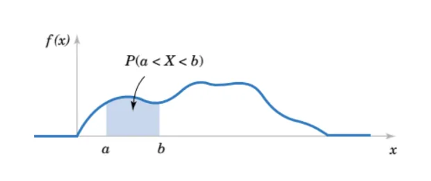
Lưu ý quan trọng: Trong biến ngẫu nhiên liên tục, dấu "<" và "≤" tương đương nhau. Ví dụ:
\(P(a < X < b)=P(a \leq X \leq b)=P(a < X \leq b)=P(a \leq X < b)\)
Điều này là do xác suất tại một điểm cụ thể luôn bằng 0.
Hiển thị ví dụ
Ví dụ: Xét hàm mật độ xác suất \(f(x) = 2x\) cho \(0 \leq x \leq 1\). Tính xác suất X nằm trong khoảng [0.25, 0.5].
Giải:
\(P(0.25 \leq X \leq 0.5) = \int_{0.25}^{0.5} 2x dx\)
\(= [x^2]_{0.25}^{0.5} = 0.5^2 - 0.25^2 = 0.1875\)
Giải thích: Xác suất này tương đương với diện tích dưới đường cong của \(f(x) = 2x\) từ x = 0.25 đến x = 0.5. Kết quả 0.1875 (hay 18.75%) cho thấy xác suất X nằm trong khoảng này.
4.3 Cumulative Distribution Functions
Hàm phân bố tích lũy F(x) biểu thị xác suất \(X \leq x\).
Công thức: \(F(x) = \int_{-\infty}^{x} f(t)dt\)
Xác suất trong khoảng: \(P(a \leq X \leq b) = F(b) - F(a)\)
Hiển thị ví dụ
Ví dụ: Cho hàm mật độ xác suất \(f(x) = 2x\) cho \(0 \leq x \leq 1\). Hàm phân phối tích lũy là:
\(F(x) = \int_{0}^{x} 2t dt = [t^2]_{0}^{x} = x^2\) cho \(0 \leq x \leq 1\)
4.4 Mean and Variance of a Continuous Random Variable
Mean (Kỳ vọng): \(E(X) = \int_{-\infty}^{\infty} xf(x)dx\)
Variance (Phương sai): \(Var(X) = E[(X - \mu)^2] = \int_{-\infty}^{\infty} (x - \mu)^2f(x)dx\)
Standard deviation (Độ lệch chuẩn): \(\sigma = \sqrt{Var(X)}\)
Hiển thị ví dụ
Ví dụ: Cho \(f(x) = 2x\) cho \(0 \leq x \leq 1\). Tính E(X) và Var(X):
\(E(X) = \int_{0}^{1} x(2x)dx = 2\int_{0}^{1} x^2dx = 2[x^3/3]_{0}^{1} = 2/3\)
\(Var(X) = E(X^2) - [E(X)]^2 = 2\int_{0}^{1} x^3dx - (2/3)^2 = 1/2 - 4/9 = 1/18\)
4.5 Continuous Uniform Distribution
Hàm phân bố: \(f(x) = \frac{1}{b - a}\) for \(a \leq x \leq b\)
Mean: \(\mu = \frac{a + b}{2}\)
Variance: \(\sigma^2 = \frac{(b - a)^2}{12}\)
Hàm tích lũy: \(F(x) = \frac{x - a}{b - a}\) for \(a \leq x \leq b\)
4.6 Normal Distribution
Phân bố chuẩn: \(X \sim N(\mu, \sigma^2)\)
Mean: \(\mu\)
Variance: \(\sigma^2\)
Standard Normal Distribution: \(Z \sim N(0, 1)\)
Chuyển đổi: \(Z = \frac{X - \mu}{\sigma}\)
Hiển thị ví dụ
Ví dụ: Chiều cao của người trưởng thành tuân theo phân phối chuẩn với \(\mu = 170cm\) và \(\sigma = 10cm\). Tính xác suất một người có chiều cao từ 160cm đến 180cm.
Chuyển đổi sang chuẩn hóa:
\(Z_1 = \frac{160 - 170}{10} = -1\)
\(Z_2 = \frac{180 - 170}{10} = 1\)
\(P(160 \leq X \leq 180) = P(-1 \leq Z \leq 1) \approx 0.6827\) (68.27%)
4.7 Normal Approximation to the Binomial and Poisson Distributions
a. Xấp xỉ chuẩn cho phân phối nhị thức
Áp dụng khi \(np > 5\) và \(n(1-p) > 5\)
Binomial: \(\mu = np\), \(\sigma^2 = np(1 - p)\)
Biến đổi chuẩn hóa: \(Z = \frac{X - np}{\sqrt{np(1-p)}}\)
Hiệu chỉnh liên tục:
- \(P(X_{Binomial} \leq a) = P(X_{Normal} \leq a + 0.5)\)
- \(P(X_{Binomial} \geq a) = P(X_{Normal} \geq a - 0.5)\)
b. Xấp xỉ chuẩn cho phân phối Poisson
Áp dụng khi \(\lambda > 5\)
Poisson: \(\mu = \lambda\), \(\sigma^2 = \lambda\)
Biến đổi chuẩn hóa: \(Z = \frac{X - \lambda}{\sqrt{\lambda}}\)
Hiệu chỉnh liên tục:
- \(P(X_{Poisson} \leq a) = P(X_{Normal} \leq a + 0.5)\)
- \(P(X_{Poisson} \geq a) = P(X_{Normal} \geq a - 0.5)\)
Lưu ý: Hiệu chỉnh liên tục (+0.5 hoặc -0.5) được áp dụng để cải thiện độ chính xác của xấp xỉ.
Hiển thị ví dụ
Ví dụ 1 (Nhị thức): Một nhà máy sản xuất bóng đèn có tỉ lệ lỗi 5%. Trong một lô 1000 bóng đèn, tính xác suất có từ 40 đến 60 bóng đèn lỗi.
Sử dụng xấp xỉ chuẩn cho phân phối nhị thức:
\(\mu = np = 1000 \times 0.05 = 50\)
\(\sigma^2 = np(1-p) = 1000 \times 0.05 \times 0.95 = 47.5\)
\(\sigma = \sqrt{47.5} \approx 6.89\)
\(Z_1 = \frac{39.5 - 50}{6.89} \approx -1.52\)
\(Z_2 = \frac{60.5 - 50}{6.89} \approx 1.52\)
\(P(40 \leq X \leq 60) \approx P(-1.52 \leq Z \leq 1.52) \approx 0.8712\) (87.12%)
Ví dụ 2 (Poisson): Trung bình có 20 cuộc gọi đến tổng đài trong 1 giờ. Tính xác suất có ít nhất 25 cuộc gọi trong 1 giờ.
Sử dụng xấp xỉ chuẩn cho phân phối Poisson:
\(\lambda = 20\)
\(Z = \frac{24.5 - 20}{\sqrt{20}} \approx 1.01\)
\(P(X \geq 25) \approx P(Z \geq 1.01) \approx 1 - 0.8438 = 0.1562\) (15.62%)
4.8 Exponential Distribution
Hàm phân bố xác suất: \(f(x) = \lambda e^{-\lambda x}\) for \(x \geq 0\)
Mean: \(1/\lambda\)
Variance: \(1/\lambda^2\)
Hiển thị ví dụ
Ví dụ: Thời gian giữa các cuộc gọi đến tổng đài tuân theo phân phối mũ với trung bình 5 phút. Tính xác suất thời gian chờ giữa hai cuộc gọi lớn hơn 10 phút.
\(\lambda = 1/5 = 0.2\) (cuộc gọi/phút)
\(P(X > 10) = 1 - P(X \leq 10) = 1 - (1 - e^{-\lambda x}) = e^{-\lambda x}\)
\(= e^{-0.2 \times 10} \approx 0.1353\) (13.53%)
Chapter 6: Descriptive Statistics (Thống kê mô tả)
Chương này giới thiệu về các phương pháp thống kê mô tả, giúp tóm tắt và trình bày dữ liệu một cách hiệu quả.
6.1 Numerical Summaries of Data
Cho một mẫu gồm n quan sát: x1, x2, x3, ..., xn. Các đại lượng thống kê mô tả quan trọng bao gồm:
1. Sample mean (Trung bình mẫu):
\(\bar{x} = \frac{1}{n}\sum_{i=1}^n x_i = \frac{x_1+x_2+x_3+...+x_n}{n}\)
Ý nghĩa: Đại diện cho giá trị trung tâm của dữ liệu.
2. Sample variance (Phương sai mẫu):
\(s^2 = \frac{1}{n-1}\sum_{i=1}^n (x_i - \bar{x})^2\)
Ý nghĩa: Đo lường mức độ phân tán của dữ liệu xung quanh giá trị trung bình.
3. Sample standard deviation (Độ lệch chuẩn mẫu):
\(s = \sqrt{s^2}\)
Ý nghĩa: Đo lường mức độ phân tán của dữ liệu, có cùng đơn vị với dữ liệu gốc.
4. Sample range (Khoảng mẫu):
Range = max(xi) - min(xi)
Ý nghĩa: Đo lường khoảng cách giữa giá trị lớn nhất và nhỏ nhất trong mẫu.
5. Coefficient of variation (Hệ số biến thiên):
CV = \(\frac{s}{\bar{x}} \times 100\%\)
Ý nghĩa: So sánh độ phân tán tương đối giữa các bộ dữ liệu có đơn vị khác nhau.
Hiển thị ví dụ
Ví dụ: Cho dữ liệu chiều cao (cm) của 5 sinh viên: 165, 170, 168, 172, 175
Bước 1: Tính Sample mean
\(\bar{x} = \frac{165 + 170 + 168 + 172 + 175}{5} = 170\) cm
Bước 2: Tính Sample variance
\(s^2 = \frac{(165-170)^2 + (170-170)^2 + (168-170)^2 + (172-170)^2 + (175-170)^2}{5-1} = \frac{25 + 0 + 4 + 4 + 25}{4} = \frac{58}{4} = 14.5\) cm²
Bước 3: Tính Sample standard deviation
\(s = \sqrt{14.5} \approx 3.81\) cm
Bước 4: Tính Sample range
Range = 175 - 165 = 10 cm
Bước 5: Tính Coefficient of variation
CV = \(\frac{3.81}{170} \times 100\% \approx 2.24\%\)
Kết luận: Chiều cao trung bình là 170 cm, với độ lệch chuẩn 3.81 cm. Hệ số biến thiên 2.24% cho thấy dữ liệu tương đối đồng nhất.
Chú ý mẫu số là \(n - 1 = 4\), không phải \(n = 5\). Đây là lỗi mất điểm phổ biến nhất của cả chương: chia cho \(n\) cho ra phương sai quần thể, chia cho \(n-1\) mới cho ra phương sai mẫu không chệch. Đề bài nói "một mẫu gồm 5 sinh viên" thì dùng \(n-1\).
6.2 Stem-and-Leaf Diagrams:
Stem-and-Leaf Diagrams:
Biểu đồ Stem-and-Leaf là một phương pháp trực quan hóa dữ liệu, chia thành phần "stem" (thân) và "leaf" (lá). Nó giúp hiển thị phân phối và cấu trúc của dữ liệu một cách hiệu quả.
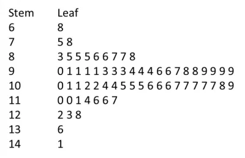
Các Đại Lượng Thống Kê Quan Trọng:
1. Sample median (Trung vị mẫu):
Giá trị nằm giữa của dữ liệu đã sắp xếp. Với n số:
- Nếu n lẻ: median là số thứ (n+1)/2
- Nếu n chẵn: median là trung bình của hai số giữa
2. Sample mode (Mốt mẫu):
Giá trị xuất hiện nhiều nhất trong dữ liệu. Một tập dữ liệu có thể có nhiều hơn một mốt.
3. Quartiles (Tứ phân vị - Cái này Xài CASIO 580 chạy ngon nhé):
- Q1 (25%): Giá trị chia dữ liệu sao cho 25% số liệu nhỏ hơn hoặc bằng nó
- Q2 (50%): Chính là median
- Q3 (75%): Giá trị chia dữ liệu sao cho 75% số liệu nhỏ hơn hoặc bằng nó
4. Interquartile range (IQR - Khoảng tứ phân vị):
IQR = Q3 - Q1
IQR là một thước đo về độ phân tán của dữ liệu và ít bị ảnh hưởng bởi các giá trị ngoại lai.
5. Percentiles (Phân vị):
Giá trị chia dữ liệu thành 100 phần bằng nhau. Ví dụ, phân vị thứ 90 là giá trị mà 90% số liệu nhỏ hơn hoặc bằng nó.
Hiển thị ví dụ
Ví dụ: Cho dữ liệu điểm thi của 15 sinh viên: 65, 70, 75, 80, 82, 83, 85, 85, 88, 90, 90, 92, 95, 98, 100
Stem-and-Leaf Diagram:
6 | 5
7 | 0 5
8 | 0 2 3 5 5 8
9 | 0 0 2 5 8
10| 0
Sample median: 85 (số thứ 8 trong dãy đã sắp xếp)
Sample mode: 85 và 90 (xuất hiện 2 lần)
Quartiles: Q1 = 80, Q2 = 85, Q3 = 92
IQR: 92 - 80 = 12
90th percentile: 98 (90% điểm số nhỏ hơn hoặc bằng 98)
Ý nghĩa: IQR = 12 cho thấy 50% điểm số ở giữa phân bố nằm trong khoảng 12 điểm. Điều này cung cấp thông tin về độ phân tán của dữ liệu.
6.3 Frequency Distributions and Histograms
Frequency Distribution:
Frequency distribution là cách tổ chức và tóm tắt dữ liệu bằng cách nhóm các giá trị thành các khoảng và đếm số lượng quan sát trong mỗi khoảng.
Relative Frequency Distribution:
Relative frequency distribution cho biết tỷ lệ hoặc phần trăm của các quan sát trong mỗi khoảng.
Relative frequency = Frequency / Total number of observations
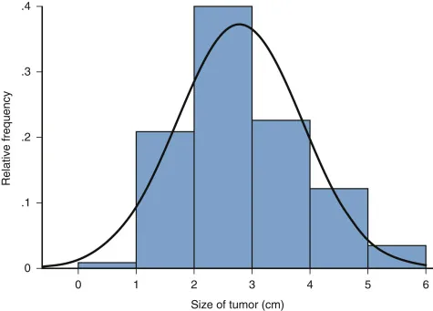
Cumulative Frequency Distribution:
Cumulative frequency distribution hiển thị tổng tích lũy của các tần số hoặc tần số tương đối từ khoảng thấp nhất đến khoảng cao nhất.
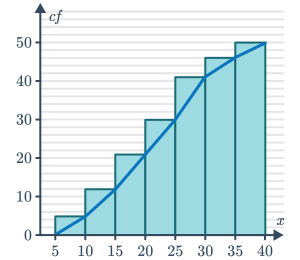
Histogram:
Histogram là biểu đồ cột thể hiện frequency distribution. Chiều cao của mỗi cột tương ứng với tần số hoặc tần số tương đối của khoảng đó.
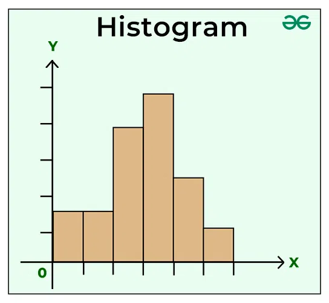
Lưu ý quan trọng:
- Số lượng khoảng (bins) ảnh hưởng đến hình dạng của histogram. Quá ít khoảng có thể che giấu chi tiết, quá nhiều khoảng có thể tạo ra nhiễu.
- Histogram giúp nhận biết hình dạng phân phối (đối xứng, lệch phải, lệch trái, đa phương thức).
- So với box plot, histogram cung cấp thông tin chi tiết hơn về phân phối dữ liệu.
Hiển thị ví dụ
Ví dụ: Cho dữ liệu về số giờ học mỗi tuần của 50 sinh viên:
| Số giờ | Tần số | Tần số tương đối | Tần số tích lũy |
|---|---|---|---|
| 0-5 | 5 | 0.10 | 0.10 |
| 6-10 | 15 | 0.30 | 0.40 |
| 11-15 | 20 | 0.40 | 0.80 |
| 16-20 | 8 | 0.16 | 0.96 |
| 21-25 | 2 | 0.04 | 1.00 |
Phân tích:
- Mode: 11-15 giờ (tần số cao nhất)
- Median: nằm trong khoảng 11-15 giờ (tần số tích lũy vượt 0.5)
- Phân phối: Hơi lệch phải (đuôi dài về phía các giá trị cao)
- 80% sinh viên học 15 giờ hoặc ít hơn mỗi tuần
6.4 Box Plot
Box plot là một công cụ trực quan hóa dữ liệu, giúp phân tích phân phối của tập dữ liệu và xác định các điểm ngoại lai (outliers). Nó thể hiện các quartiles của dữ liệu và giúp người dùng dễ dàng so sánh phân phối giữa các nhóm khác nhau.
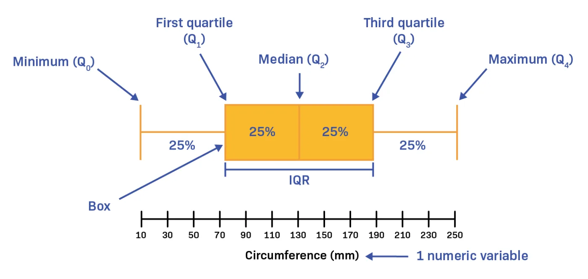
Công thức tổng quát để tính toán các giá trị tóm tắt trong box plot:
- Q1: Quartile thứ nhất (25th percentile) - giá trị tại vị trí 25% trong dữ liệu.
- Q2: Quartile thứ hai (50th percentile hoặc median) - giá trị ở giữa của tập dữ liệu.
- Q3: Quartile thứ ba (75th percentile) - giá trị tại vị trí 75% trong dữ liệu.
- IQR (Interquartile Range): Q3 - Q1, đo độ phân tán giữa Q1 và Q3.
- Đầu mút trên: min(max(data), Q3 + 1.5*IQR) - giới hạn tối đa cho dữ liệu.
- Đầu mút dưới: max(min(data), Q1 - 1.5*IQR) - giới hạn tối thiểu cho dữ liệu.
Các điểm nằm ngoài khoảng (Đầu mút dưới, Đầu mút trên) được coi là outliers.
Hiển thị ví dụ
Ví dụ: Cho dữ liệu về thời gian hoàn thành bài tập (phút) của 15 sinh viên: 10, 12, 13, 15, 16, 17, 18, 19, 20, 21, 22, 23, 25, 30, 35
Bước 1: Tính các quartiles
Sắp xếp dữ liệu: 10, 12, 13, 15, 16, 17, 18, 19, 20, 21, 22, 23, 25, 30, 35
Cách tìm Q1, Q2, Q3:
- Q2 (Median): Với 15 số, median là số ở vị trí thứ (15+1)/2 = 8. Vậy Q2 = 19 phút.
- Q1: Median của nửa dưới dãy số (7 số đầu tiên). Vị trí của Q1 là (7+1)/2 = 4. Vậy Q1 = 15 phút.
- Q3: Median của nửa trên dãy số (7 số cuối cùng). Vị trí của Q3 là 8 + (7+1)/2 = 12. Vậy Q3 = 23 phút.
Bước 2: Tính IQR (Interquartile Range)
IQR = Q3 - Q1 = 23 - 15 = 8 phút
Bước 3: Xác định đầu mút trên và dưới
Đầu mút trên: min(max(data), Q3 + 1.5*IQR)
= min(35, 23 + 1.5*8) = min(35, 35) = 35 phút
Đầu mút dưới: max(min(data), Q1 - 1.5*IQR)
= max(10, 15 - 1.5*8) = max(10, 3) = 10 phút
Bước 4: Xác định outliers
Outliers là các điểm nằm ngoài khoảng (Đầu mút dưới, Đầu mút trên)
Trong trường hợp này, không có outliers vì tất cả các điểm đều nằm trong khoảng từ 10 đến 35 phút.
Bước 5: Vẽ box plot
- Hộp (box) được vẽ từ Q1 đến Q3, thể hiện 50% dữ liệu giữa.
- Đường ngang trong hộp biểu thị median (Q2), cho thấy giá trị giữa của dữ liệu.
- Các đầu mút (whiskers) kéo dài từ hộp đến giá trị min và max trong phạm vi cho phép.
- Nếu có, các outliers sẽ được biểu diễn bằng các điểm riêng biệt bên ngoài đầu mút.
Kết luận: Box plot cho thấy phân phối thời gian hoàn thành bài tập của sinh viên. Không có outliers, thời gian tập trung chủ yếu từ 15 đến 23 phút, với median là 19 phút, giúp bạn hiểu được điểm trung bình và sự phân bố dữ liệu.
Lưu ý về các giá trị tóm tắt:
- Giá trị nhỏ nhất (Minimum): 10 phút (có trong dataset)
- Q1: 15 phút (không nhất thiết phải có trong dataset)
- Median (Q2): 19 phút (không nhất thiết phải có trong dataset)
- Q3: 23 phút (không nhất thiết phải có trong dataset)
- Giá trị lớn nhất (Maximum): 35 phút (có trong dataset)
Chỉ có giá trị nhỏ nhất và giá trị lớn nhất bắt buộc phải có trong dataset. Các giá trị Q1, Median, và Q3 là kết quả của phép tính và không nhất thiết phải xuất hiện trong tập dữ liệu gốc, nhưng chúng rất quan trọng để hiểu rõ hơn về sự phân bố dữ liệu.
Chapter 7: Sampling Distribution (Phân phối mẫu)
Chương này giới thiệu về phân phối mẫu, một khái niệm quan trọng trong thống kê suy luận.
7.1 Sampling Distribution of the Mean
Cho quần thể có trung bình \(\mu\) và phương sai \(\sigma^2\). Kích thước mẫu n.
Nếu quần thể có phân phối chuẩn hoặc n > 30:
Phân phối của \(\bar{X}\) có dạng: \(N(\mu, \frac{\sigma^2}{n})\)
7.2 Sampling Distribution of the Difference in Means
Phân phối của \(\bar{X}_1 - \bar{X}_2\) có dạng: \(N(\mu_1 - \mu_2, \frac{\sigma_1^2}{n_1} + \frac{\sigma_2^2}{n_2})\)
7.3 Sampling Distribution of the Proportion
Cho tỷ lệ quần thể p, kích thước mẫu n. Xấp xỉ chuẩn chỉ dùng được khi cả hai điều kiện đều đạt: np ≥ 5 và n(1−p) ≥ 5. Chỉ một trong hai là không đủ — với p rất nhỏ hoặc rất gần 1 thì phân phối của \(\hat{P}\) lệch hẳn về một bên và xấp xỉ chuẩn sai.
Phân phối của \(\hat{P}\) có dạng: \(N(P, \frac{P(1-P)}{n})\)
7.4 Sampling Distribution of the Difference in Proportions
Phân phối của \(\hat{P}_1 - \hat{P}_2\) có dạng: \(N(P_1 - P_2, \frac{P_1(1-P_1)}{n_1} + \frac{P_2(1-P_2)}{n_2})\)
7.5 Central Limit Theorem
Cho quần thể có trung bình \(\mu\) và phương sai \(\sigma^2\), và \(\bar{X}\) là trung bình mẫu. Ta có:
\(Z = \frac{\bar{X} - \mu}{\sigma/\sqrt{n}}\)
- Nếu quần thể có phân phối chuẩn thì trung bình mẫu \(\bar{X}\) có phân phối chuẩn — với mọi \(n\), kể cả \(n = 2\).
- Nếu quần thể không có phân phối chuẩn thì \(\bar{X}\) vẫn xấp xỉ chuẩn khi n ≥ 30.
7.6 Point Estimation
Trung bình mẫu \(\bar{X}\) và phương sai mẫu \(S^2\) là các thống kê mẫu (statistics).
- \(\bar{X}\) là ước lượng điểm của trung bình quần thể \(\mu\)
- \(S^2\) là ước lượng điểm của phương sai quần thể \(\sigma^2\)
Hiển thị ví dụ
Ví dụ: Một nhà máy sản xuất bóng đèn có tuổi thọ trung bình 1000 giờ với độ lệch chuẩn 100 giờ. Nếu chọn ngẫu nhiên 64 bóng đèn, tính xác suất trung bình mẫu nằm trong khoảng từ 980 đến 1020 giờ.
Giải:
\(\mu = 1000\), \(\sigma = 100\), \(n = 64\)
\(\sigma_{\bar{X}} = \frac{\sigma}{\sqrt{n}} = \frac{100}{\sqrt{64}} = 12.5\)
\(Z_1 = \frac{980 - 1000}{12.5} = -1.6\)
\(Z_2 = \frac{1020 - 1000}{12.5} = 1.6\)
\(P(980 < \bar{X} < 1020)=P(-1.6 < Z < 1.6)=0.8904\)
Kết luận: Xác suất trung bình mẫu nằm trong khoảng từ 980 đến 1020 giờ là 89.04%.
PT3 · Chương 8 – 11
Chương 8: Khoảng Tin Cậy cho Một Mẫu Số liệu
Trong chương này, chúng ta sẽ tìm hiểu về khoảng tin cậy, một công cụ quan trọng trong thống kê suy luận, giúp ước lượng các tham số của tổng thể dựa trên dữ liệu mẫu.
8.1 Giới thiệu về Khoảng Tin Cậy
Khoảng tin cậy (confidence interval) là một khoảng giá trị được tính toán từ dữ liệu mẫu, nhằm ước lượng giá trị thực của một tham số tổng thể với một mức độ tin cậy nhất định. Mức độ tin cậy thường được biểu thị bằng \(1 - \alpha\), trong đó \(\alpha\) là mức ý nghĩa.
Cụ thể, khoảng tin cậy cho tham số \(\mu\) có dạng:
Trong đó:
- L: Giới hạn dưới của khoảng tin cậy (Lower confidence limit)
- U: Giới hạn trên của khoảng tin cậy (Upper confidence limit)
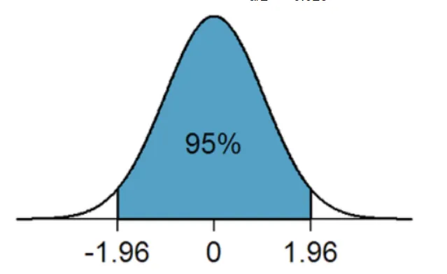
8.2 Khoảng Tin Cậy cho Trung Bình Tổng Thể
Để ước lượng trung bình tổng thể \(\mu\), chúng ta sẽ xem xét ba trường hợp sau:
- Phương sai tổng thể \(\sigma^2\) đã biết và phân phối chuẩn.
- Phân phối bất kỳ với kích thước mẫu lớn (\(n \geq 40\)).
- Phương sai tổng thể \(\sigma^2\) chưa biết nhưng phân phối chuẩn.
Trường hợp 1: Phương sai tổng thể \(\sigma^2\) đã biết
Khi tổng thể có phân phối chuẩn và phương sai \(\sigma^2\) đã biết, khoảng tin cậy mức \(1 - \alpha\) cho \(\mu\) được tính bằng công thức:
Trong đó:
- \(\bar{x}\): Trung bình mẫu
- \(\sigma\): Độ lệch chuẩn tổng thể (đã biết)
- \(n\): Kích thước mẫu
- \(z_{\alpha/2}\): Giá trị tới hạn của phân phối chuẩn, sao cho \(P(Z > z_{\alpha/2}) = \alpha/2\)
Tính kích thước mẫu cần thiết
Để đạt được một sai số ước lượng tối đa \(E\) với mức tin cậy \(1 - \alpha\), kích thước mẫu cần thiết \(n\) được tính bằng:
Trường hợp 2: Phân phối bất kỳ với kích thước mẫu lớn (\(n \geq 40\))
Khi phân phối tổng thể không biết hoặc không phải là phân phối chuẩn, nhưng kích thước mẫu đủ lớn (\(n \geq 40\)), chúng ta sử dụng định lý giới hạn trung tâm và công thức khoảng tin cậy sau:
Trong đó:
- \(s\): Độ lệch chuẩn mẫu
Trường hợp 3: Phương sai tổng thể \(\sigma^2\) chưa biết, phân phối chuẩn
Khi tổng thể có phân phối chuẩn nhưng \(\sigma^2\) chưa biết, chúng ta sử dụng phân phối t Student với \(n - 1\) bậc tự do. Công thức khoảng tin cậy mức \(1 - \alpha\) cho \(\mu\) là:
Trong đó:
- \(t_{\alpha/2, n-1}\): Giá trị tới hạn từ phân phối t với \(n - 1\) bậc tự do
8.3 Khoảng Tin Cậy cho Tỷ Lệ Tổng Thể
Khi muốn ước lượng tỷ lệ (xác suất) tổng thể \(p\), đặc biệt trong các bài toán nhị phân (thành công/thất bại), chúng ta sử dụng khoảng tin cậy cho tỷ lệ tổng thể.
Công thức khoảng tin cậy mức \(1 - \alpha\) cho \(p\) là:
Trong đó:
- \(\hat{p} = \dfrac{x}{n}\): Tỷ lệ mẫu (số trường hợp thành công chia cho kích thước mẫu)
- \(n\): Kích thước mẫu
- \(z_{\alpha/2}\): Giá trị tới hạn của phân phối chuẩn
8.4 Khoảng Tin Cậy Một Phía
Trong một số tình huống, chúng ta chỉ quan tâm đến giới hạn trên hoặc giới hạn dưới của tham số tổng thể. Khi đó, chúng ta sử dụng khoảng tin cậy một phía.
Khoảng tin cậy một phía dưới:
Khoảng tin cậy một phía trên:
Lưu ý: Trong khoảng tin cậy một phía, chúng ta sử dụng \(z_{\alpha}\) thay vì \(z_{\alpha/2}\) như trong khoảng tin cậy hai phía.
Chương 9: Kiểm định Giả thuyết cho Một Mẫu Số liệu
Trong chương này, chúng ta sẽ tìm hiểu về kiểm định giả thuyết thống kê, một công cụ quan trọng trong thống kê suy luận, cho phép chúng ta đưa ra quyết định về tham số của tổng thể dựa trên dữ liệu mẫu.
9.1 Kiểm định Giả thuyết
Kiểm định giả thuyết là quá trình sử dụng dữ liệu mẫu để đánh giá tính đúng đắn của một phát biểu cụ thể về tham số của tổng thể. Thông qua việc kiểm định giả thuyết, chúng ta có thể xác định xem dữ liệu thu thập được có cung cấp đủ bằng chứng để bác bỏ giả thuyết ban đầu hay không.
Các thành phần chính của kiểm định giả thuyết:
- Giả thuyết không (Null Hypothesis, H0): Đây là giả thuyết ban đầu mà chúng ta giả định là đúng. Thường thì H0 biểu thị rằng không có sự khác biệt hoặc không có hiệu ứng nào đáng kể.
- Giả thuyết thay thế (Alternative Hypothesis, H1 hoặc Ha): Đây là giả thuyết đối lập với H0, biểu thị rằng có sự khác biệt hoặc có hiệu ứng đáng kể.
Quá trình kiểm định giả thuyết bao gồm các bước sau:
- Xác định giả thuyết: Đặt ra H0 và H1.
- Chọn mức ý nghĩa (α): Mức ý nghĩa thường được chọn là 0.05 hoặc 0.01, biểu thị xác suất mắc lỗi loại I chấp nhận được.
- Tính toán thống kê kiểm định: Sử dụng dữ liệu mẫu để tính giá trị thống kê kiểm định.
- Xác định vùng bác bỏ: Dựa trên mức ý nghĩa và phân phối của thống kê kiểm định.
- Ra quyết định: So sánh giá trị thống kê kiểm định với vùng bác bỏ để quyết định bác bỏ hoặc không bác bỏ H0.
Lỗi trong kiểm định giả thuyết:
- Lỗi loại I (Type I Error): Bác bỏ H0 khi nó đúng. Xác suất mắc lỗi loại I chính là mức ý nghĩa α.
- Lỗi loại II (Type II Error): Không bác bỏ H0 khi nó sai. Xác suất mắc lỗi loại II được ký hiệu là β.
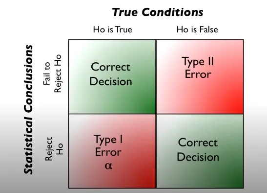
Trong ví dụ này, chúng ta muốn kiểm tra xem thời gian làm việc trung bình thực tế có khác biệt so với 8 giờ hay không dựa trên dữ liệu mẫu thu thập được.
9.2 Kiểm định Trung bình của Phân phối Chuẩn
Trong phần này, chúng ta sẽ tập trung vào việc kiểm định giả thuyết về trung bình của tổng thể khi dữ liệu tuân theo phân phối chuẩn.
Trường hợp 1: Phương sai tổng thể (σ²) đã biết
Khi phương sai tổng thể được biết, chúng ta sử dụng thống kê kiểm định Z:
Trong đó:
- \(\bar{X}\): Trung bình mẫu
- \(\mu_0\): Giá trị giả định của trung bình tổng thể theo H0
- \(\sigma\): Độ lệch chuẩn của tổng thể (đã biết)
- n: Kích thước mẫu
Quy tắc quyết định:
- Với kiểm định hai phía (H1: μ ≠ μ0): Bác bỏ H0 nếu |Z| > Zα/2
- Với kiểm định một phía:
- H1: μ > μ0: Bác bỏ H0 nếu Z > Zα
- H1: μ < μ0: Bác bỏ H0 nếu Z < -Zα
Trường hợp 2: Phương sai tổng thể (σ²) chưa biết
Khi phương sai tổng thể chưa biết, chúng ta sử dụng thống kê kiểm định t với độ tự do df = n - 1:
Trong đó:
- s: Độ lệch chuẩn mẫu
Quy tắc quyết định:
- Với kiểm định hai phía: Bác bỏ H0 nếu |t| > tα/2, n-1
- Với kiểm định một phía:
- H1: μ > μ0: Bác bỏ H0 nếu t > tα, n-1
- H1: μ < μ0: Bác bỏ H0 nếu t < -tα, n-1
Chọn \(z\) hay \(t\)? — bảng quyết định
Đây là câu hỏi đầu tiên phải trả lời trong mọi bài kiểm định về trung bình, và cũng là chỗ mất điểm nhiều nhất. Quy tắc chỉ phụ thuộc vào đề bài cho \(\sigma\) hay cho \(s\), chứ không phụ thuộc vào \(n\):
| Đề cho | Phân phối quần thể | Cỡ mẫu | Dùng | Bậc tự do |
|---|---|---|---|---|
| \(\sigma\) (quần thể) | Chuẩn | Bất kỳ | \(z\) | — |
| \(\sigma\) (quần thể) | Không chuẩn / không rõ | \(n \geq 30\) | \(z\) (nhờ CLT) | — |
| \(s\) (mẫu) | Chuẩn | Bất kỳ | \(t\) | \(n - 1\) |
| \(s\) (mẫu) | Không chuẩn / không rõ | \(n \geq 30\) | \(t\) (nhiều đề chấp nhận \(z\)) | \(n - 1\) |
| \(s\) (mẫu) | Không chuẩn | \(n < 30\) | Không dùng được \(z\) hay \(t\) | — |
Hai điều dễ nhớ sai: (1) \(n \geq 30\) không cho phép đổi \(s\) thành \(\sigma\) — với \(s\) thì \(t\) mới là thống kê đúng, chỉ có điều \(t_{0.025,\,29} = 2.045\) đã rất gần 1.96 nên hai cách cho gần cùng kết luận; (2) ngược lại, \(n\) nhỏ không ngăn ta dùng \(z\) nếu đề đã cho \(\sigma\) — như ví dụ bóng đèn \(n = 20\) ở chương 8.
9.3 Kiểm định Tỷ lệ của Tổng thể
Khi muốn kiểm định giả thuyết về tỷ lệ (proportion) của tổng thể, chúng ta sử dụng thống kê kiểm định Z như sau:
Trong đó:
- \(\hat{p}\): Tỷ lệ mẫu (số thành công trong mẫu chia cho kích thước mẫu)
- p0: Tỷ lệ giả định của tổng thể theo H0
- n: Kích thước mẫu
Quy tắc quyết định:
- Với kiểm định hai phía: Bác bỏ H0 nếu |Z| > Zα/2
- Với kiểm định một phía:
- H1: p > p0: Bác bỏ H0 nếu Z > Zα
- H1: p < p0: Bác bỏ H0 nếu Z < -Zα
9.4 Giá trị p (p-value)
Tất cả các ví dụ ở trên dùng cách "so với giá trị tới hạn": tính thống kê kiểm định, tra bảng lấy \(z_{\alpha/2}\) hoặc \(t_{\alpha/2}\), so hai số. Có một cách thứ hai cho ra cùng một kết luận nhưng nói được nhiều hơn — và là cách duy nhất mọi phần mềm thống kê (Excel, SPSS, R, Python) báo ra:
Cách tính giá trị p
Tính \(p\) phụ thuộc vào hình dạng của H1. Gọi \(z_0\) (hoặc \(t_0\)) là giá trị thống kê kiểm định đã tính được:
| Dạng H1 | Tên gọi | Vùng bác bỏ | Giá trị p |
|---|---|---|---|
| \(\mu \neq \mu_0\) | Hai phía (two-tailed) | \(|z_0| > z_{\alpha/2}\) | \(2 \times P(Z > |z_0|)\) |
| \(\mu > \mu_0\) | Một phía phải (right-tailed) | \(z_0 > z_{\alpha}\) | \(P(Z > z_0)\) |
| \(\mu < \mu_0\) | Một phía trái (left-tailed) | \(z_0 < -z_{\alpha}\) | \(P(Z < z_0)\) |
Với kiểm định \(t\) thì thay \(Z\) bằng \(t_{n-1}\), và vì bảng \(t\) trong đề thi chỉ có vài cột nên thường ta chỉ chặn được \(p\) trong một khoảng chứ không ra số chính xác — như vậy là đủ để quyết định.
Trong bài thi, hai cách đều được điểm — nhưng nếu đề in ra "p-value = ..." trong bảng kết quả (rất hay gặp ở phần hồi quy chương 11) thì bạn chỉ cần so nó với \(\alpha\), không phải tra bảng gì cả.
Chương 10: Suy luận Thống kê cho Hai Mẫu Số liệu
Trong chương này, chúng ta sẽ mở rộng các kỹ thuật thống kê từ một mẫu sang hai mẫu. Chúng ta sẽ xem xét cách so sánh hai tổng thể bằng cách phân tích sự khác biệt giữa hai trung bình và hai tỷ lệ.
10.1 Suy luận về Hiệu của Hai Trung bình của Phân phối Chuẩn
Khi so sánh hai tổng thể, chúng ta quan tâm đến hiệu của hai trung bình \(\mu_1 - \mu_2\). Chúng ta sẽ xem xét hai trường hợp:
- Phương sai tổng thể \(\sigma^2_1\) và \(\sigma^2_2\) đã biết.
- Phương sai tổng thể chưa biết nhưng giả định là bằng nhau.
Trường hợp 1: Phương sai tổng thể đã biết
Khi phương sai tổng thể đã biết và các tổng thể có phân phối chuẩn, hiệu của hai trung bình mẫu \(\bar{x}_1 - \bar{x}_2\) tuân theo phân phối chuẩn với kỳ vọng và phương sai như sau:
Do đó, khoảng tin cậy mức \(1 - \alpha\) cho hiệu \(\mu_1 - \mu_2\) được tính bằng:
Trường hợp 2: Phương sai tổng thể chưa biết nhưng bằng nhau
Khi phương sai tổng thể chưa biết nhưng có thể giả định là bằng nhau (\(\sigma_1^2 = \sigma_2^2\)), chúng ta sử dụng ước lượng phương sai gộp (pooled variance estimator) từ hai mẫu:
Trong đó \(s_1^2\) và \(s_2^2\) là phương sai mẫu của hai mẫu. Khoảng tin cậy mức \(1 - \alpha\) cho \(\mu_1 - \mu_2\) là:
Trường hợp 3: Phương sai chưa biết và không bằng nhau (Welch)
Giả định "phương sai bằng nhau" ở trường hợp 2 không phải lúc nào cũng hợp lý. Nếu hai \(s_1, s_2\) chênh nhau nhiều — quy tắc thực dụng là tỷ lệ \(s_1^2 / s_2^2\) vượt quá 4 — thì không được gộp, và ta dùng thống kê Welch:
Bậc tự do không còn là \(n_1 + n_2 - 2\) mà tính theo công thức Welch–Satterthwaite (làm tròn xuống để an toàn):
| Đề cho | Thống kê | Sai số chuẩn | Bậc tự do |
|---|---|---|---|
| \(\sigma_1, \sigma_2\) đã biết | \(z\) | \(\sqrt{\sigma_1^2/n_1 + \sigma_2^2/n_2}\) | — |
| \(s_1, s_2\); giả định \(\sigma_1 = \sigma_2\) | \(t\) gộp | \(s_p\sqrt{1/n_1 + 1/n_2}\) | \(n_1 + n_2 - 2\) |
| \(s_1, s_2\); không giả định bằng nhau | \(t\) Welch | \(\sqrt{s_1^2/n_1 + s_2^2/n_2}\) | \(\nu\) (công thức trên) |
Trong đề thi MAS291, đề gần như luôn nói rõ "giả định phương sai bằng nhau" để bạn dùng trường hợp 2 — nhưng phải biết trường hợp 3 tồn tại để không dùng công thức gộp cho dữ liệu hai phương sai chênh lệch rõ rệt.
10.2 Kiểm định Giả thuyết về Hiệu của Hai Trung bình
Trong kiểm định giả thuyết về hiệu của hai trung bình, chúng ta muốn kiểm tra xem liệu có sự khác biệt đáng kể giữa hai trung bình tổng thể hay không. Giả thuyết được đặt ra như sau:
Trong đó \(\Delta_0\) là giá trị giả định cho hiệu của hai trung bình (thường là 0).
Trường hợp 1: Phương sai tổng thể đã biết
Thống kê kiểm định Z được tính như sau:
Quy tắc quyết định:
- Kiểm định hai phía: Bác bỏ \(H_0\) nếu \(|Z| > Z_{\alpha/2}\)
- Kiểm định một phía:
- \(H_1: \mu_1 - \mu_2 > \Delta_0\): Bác bỏ \(H_0\) nếu \(Z > Z_{\alpha}\)
- \(H_1: \mu_1 - \mu_2 < \Delta_0\): Bác bỏ \(H_0\) nếu \(Z < -Z_{\alpha}\)
Trường hợp 2: Phương sai tổng thể chưa biết nhưng bằng nhau
Thống kê kiểm định t được tính như sau:
Trong đó \(s_p\) là ước lượng phương sai gộp, bậc tự do \(df = n_1 + n_2 - 2\).
Quy tắc quyết định tương tự như trên, sử dụng giá trị tới hạn từ phân phối t.
10.3 Suy luận về Hiệu của Hai Tỷ lệ
Khi so sánh tỷ lệ (xác suất) giữa hai tổng thể, chúng ta quan tâm đến hiệu \(p_1 - p_2\). Khoảng tin cậy mức \(1 - \alpha\) cho hiệu của hai tỷ lệ được tính như sau:
Trong đó \(\hat{p}_1\) và \(\hat{p}_2\) là tỷ lệ mẫu của hai mẫu.
Kiểm định Giả thuyết về Hiệu của Hai Tỷ lệ
Giả thuyết kiểm định thường là:
Thống kê kiểm định Z được tính như sau:
Trong đó \(\hat{p}\) là tỷ lệ gộp:
Với \(x_1\) và \(x_2\) là số trường hợp thành công trong hai mẫu.
Quy tắc quyết định:
- Kiểm định hai phía: Bác bỏ \(H_0\) nếu \(|Z| > Z_{\alpha/2}\)
- Kiểm định một phía:
- \(H_1: p_1 - p_2 > 0\): Bác bỏ \(H_0\) nếu \(Z > Z_{\alpha}\)
- \(H_1: p_1 - p_2 < 0\): Bác bỏ \(H_0\) nếu \(Z < -Z_{\alpha}\)
10.4 Mẫu Cặp (Paired t-test)
Cả 10.1–10.3 đều giả định hai mẫu độc lập: 30 học sinh nhóm này và 35 học sinh nhóm kia là những người khác nhau. Nhưng có một dạng đề rất hay gặp mà giả định đó bị vi phạm: đo hai lần trên cùng một đối tượng.
- Điểm của cùng một sinh viên trước và sau khi học phụ đạo
- Huyết áp của cùng một bệnh nhân trước và sau khi dùng thuốc
- Cùng một chi tiết máy được đo bởi hai thiết bị khác nhau
Dấu hiệu nhận biết trong đề: hai dãy số có cùng số phần tử và ghép được từng cặp một-một. Khi đó dùng công thức hai mẫu độc lập là sai — cách làm đúng là biến bài toán hai mẫu thành bài toán một mẫu trên hiệu số:
Trong đó \(n\) là số cặp (không phải tổng số phép đo), \(\bar{d}\) là trung bình các hiệu, và \(s_d\) là độ lệch chuẩn mẫu của các hiệu. Sau bước lập cột \(d_i\), toàn bộ phần còn lại giống hệt kiểm định \(t\) một mẫu ở mục 9.2.
Chương 11: Hồi quy Tuyến tính Đơn giản và Tương quan
Trong chương này, chúng ta sẽ khám phá mối quan hệ giữa hai biến số bằng cách sử dụng hồi quy tuyến tính đơn giản và phân tích tương quan. Chúng ta sẽ học cách xây dựng mô hình dự đoán và đánh giá mức độ liên quan giữa các biến.
11.1 Mô hình Thực nghiệm
Mô hình thực nghiệm được sử dụng để mô tả mối quan hệ giữa hai biến số thông qua dữ liệu thực tế. Chúng ta quan tâm đến việc xác định xem liệu một biến có thể được dự đoán từ biến khác hay không.
Biến Độc lập và Biến Phụ thuộc
- Biến độc lập (Independent variable, \(X\)): Biến mà chúng ta sử dụng để dự đoán giá trị của biến khác.
- Biến phụ thuộc (Dependent variable, \(Y\)): Biến mà chúng ta muốn dự đoán.
Mô hình Hồi quy Tuyến tính
Mô hình hồi quy tuyến tính đơn giản có dạng:
Trong đó:
- \(\beta_0\): Hệ số chặn (Intercept)
- \(\beta_1\): Hệ số góc (Slope)
- \(\varepsilon\): Sai số ngẫu nhiên (Random error)
Mục tiêu của chúng ta là ước lượng các tham số \(\beta_0\) và \(\beta_1\) sao cho mô hình phù hợp nhất với dữ liệu quan sát.
11.2 Hồi quy Tuyến tính Đơn giản
Chúng ta có một tập dữ liệu gồm \(n\) cặp quan sát \((x_1, y_1), (x_2, y_2), \dots, (x_n, y_n)\). Mục tiêu là tìm đường thẳng tốt nhất (best-fit line) để mô tả mối quan hệ giữa \(X\) và \(Y\).
Phương pháp Bình phương Nhỏ nhất (Least Squares Method)
Phương pháp bình phương nhỏ nhất được sử dụng để ước lượng các tham số \(\beta_0\) và \(\beta_1\) bằng cách tối thiểu hóa tổng bình phương sai số giữa giá trị thực tế và giá trị dự đoán:
Trong đó:
- \(y_i\): Giá trị thực tế của biến phụ thuộc.
- \(\hat{y}_i = \hat{\beta}_0 + \hat{\beta}_1 x_i\): Giá trị dự đoán từ mô hình.
- \(\text{SSE}\): Tổng bình phương sai số (Sum of Squared Errors).
Ước lượng các Tham số Hồi quy
Các ước lượng cho \(\beta_1\) và \(\beta_0\) được tính như sau:
Trong đó:
- \(\bar{x} = \dfrac{1}{n} \sum_{i=1}^{n} x_i\): Trung bình của biến độc lập.
- \(\bar{y} = \dfrac{1}{n} \sum_{i=1}^{n} y_i\): Trung bình của biến phụ thuộc.
Đường Hồi quy Tuyến tính Ước lượng
Phương trình hồi quy tuyến tính ước lượng là:
Sai số Dư (Residuals)
Sai số dư đại diện cho phần sai lệch giữa giá trị thực tế và giá trị dự đoán:
Tổng bình phương sai số dư được tính bằng:
Ước lượng Phương sai của Sai số
Ước lượng cho phương sai của sai số (\(\sigma^2\)) là:
Với \(n - 2\) là bậc tự do (degrees of freedom).
11.3 Tính chất của các Ước lượng Bình phương Nhỏ nhất
Các ước lượng \(\hat{\beta}_0\) và \(\hat{\beta}_1\) có các tính chất quan trọng, bao gồm tính không chệch và tính hiệu quả.
Ước lượng Sai số Chuẩn của Hệ số Hồi quy
Ước lượng sai số chuẩn của \(\hat{\beta}_1\) và \(\hat{\beta}_0\) được tính như sau:
Trong đó \(s\) là ước lượng của độ lệch chuẩn của sai số (\(\varepsilon\)).
Khoảng Tin cậy cho Hệ số Hồi quy
Có thể xây dựng khoảng tin cậy cho \(\beta_1\) và \(\beta_0\) như sau:
Với \(t_{\alpha/2, n-2}\) là giá trị tới hạn từ phân phối t Student với \(n - 2\) bậc tự do.
11.4 Kiểm định Giả thuyết trong Hồi quy Tuyến tính Đơn giản
Chúng ta có thể kiểm định giả thuyết về các tham số \(\beta_1\) và \(\beta_0\) để xác định xem biến độc lập \(X\) có ảnh hưởng đáng kể đến biến phụ thuộc \(Y\) hay không.
Kiểm định trên Hệ số Góc (\(\beta_1\))
Giả thuyết:
Thường thì \(\beta_{1,0} = 0\), tức là kiểm tra xem có mối quan hệ tuyến tính giữa \(X\) và \(Y\) hay không.
Thống kê kiểm định:
Quy tắc quyết định:
- Bác bỏ \(H_0\) nếu \(|t| > t_{\alpha/2, n - 2}\)
Kiểm định trên Hệ số Chặn (\(\beta_0\))
Giả thuyết:
Thống kê kiểm định:
Quy tắc quyết định:
- Bác bỏ \(H_0\) nếu \(|t| > t_{\alpha/2, n - 2}\)
Với dữ liệu ở trên, \(s_{\hat{\beta}_0} = 4.195 \sqrt{\dfrac{1}{5} + \dfrac{6^2}{40}} = 4.195\sqrt{1.1} \approx 4.40\), nên kiểm định \(H_0: \beta_0 = 0\) cho \(t_0 = 76.2 / 4.40 \approx 17.3\) — bác bỏ rất mạnh. Nhưng hãy cẩn thận khi đọc kết quả này: \(\hat{\beta}_0\) là điểm dự đoán khi học 0 giờ, mà dữ liệu chỉ chạy từ 2 đến 10 giờ. Ngoại suy ra ngoài khoảng \(x\) đã quan sát là chỗ mô hình hồi quy dễ nói sai nhất, và trong phần lớn bài toán thực tế thì kiểm định trên \(\beta_0\) ít có ý nghĩa hơn kiểm định trên \(\beta_1\).
11.5 Hệ số Tương quan
Hệ số tương quan đo lường mức độ và hướng của mối quan hệ tuyến tính giữa hai biến.
Hệ số Tương quan Mẫu (\(r\))
Hệ số tương quan mẫu được tính bằng:
Tính chất của \(r\):
- \(-1 \leq r \leq 1\)
- Nếu \(r > 0\): Mối quan hệ đồng biến (khi \(X\) tăng, \(Y\) tăng)
- Nếu \(r < 0\): Mối quan hệ nghịch biến (khi \(X\) tăng, \(Y\) giảm)
- Nếu \(r = 0\): Không có mối quan hệ tuyến tính
Hệ số Xác định (\(r^2\))
Hệ số xác định đo lường tỷ lệ biến thiên của \(Y\) được giải thích bởi mô hình hồi quy. Định nghĩa của nó dựa trên việc tách tổng biến thiên của \(Y\) thành hai phần:
Trong đó:
- \(\text{SST}\): Tổng biến thiên của \(Y\) (Total Sum of Squares) — chính là \(S_{yy}\).
- \(\text{SSR}\): Phần biến thiên mô hình giải thích được (Regression Sum of Squares), tính nhanh bằng \(\hat{\beta}_1 S_{xy}\).
- \(\text{SSE}\): Phần biến thiên còn sót lại (Sum of Squared Errors).
Giá trị \(r^2\) nằm trong khoảng từ 0 đến 1. Trong hồi quy tuyến tính đơn, \(r^2\) đúng bằng bình phương của hệ số tương quan \(r\) — nhưng đó là một kết quả, không phải định nghĩa. Cách đọc: \(r^2 = 0.87\) nghĩa là mô hình giải thích được 87% biến thiên của \(Y\); 13% còn lại do những yếu tố mô hình không nắm.
11.6 Kiểm định Giả thuyết về Hệ số Tương quan
Chúng ta có thể kiểm định giả thuyết về hệ số tương quan tổng thể \(\rho\) để xác định xem mối quan hệ tuyến tính quan sát được có ý nghĩa thống kê hay không.
Kiểm định Giả thuyết
Giả thuyết:
Thống kê kiểm định:
Quy tắc quyết định:
- Bác bỏ \(H_0\) nếu \(|t| > t_{\alpha/2, n - 2}\)
Tự kiểm tra
Chín câu, ba câu mỗi Progress Test. Đọc lại ghi chú thì thấy dễ; tự làm mới biết mình hiểu hay chỉ đang nhận ra chữ. Làm trên giấy trước, bấm "Đáp án" sau — không phải để kiểm tra kết quả mà để so cách đi.
PT1 — Xác suất và biến ngẫu nhiên
Câu 1. Một hộp có 4 bóng đỏ và 6 bóng xanh. Bốc lần lượt 2 bóng không hoàn lại. Tính xác suất hai bóng cùng màu.
Đáp án câu 1
Hai trường hợp rời nhau, cộng lại. Mẫu số giảm dần vì không hoàn lại:
Bẫy ở đây là dùng \(\dfrac{4}{10} \times \dfrac{3}{10}\) — đó là có hoàn lại (xem mục 2.4).
Câu 2. \(X \sim B(n = 10,\ p = 0.3)\). Tính \(P(X = 3)\), \(E(X)\) và \(\text{Var}(X)\).
Đáp án câu 2
Kiểm tra nhanh: \(E(X) = 3\) và \(P(X = 3) \approx 0.27\) là giá trị có xác suất lớn nhất — hợp lý, vì mốt của phân phối nhị thức luôn nằm cạnh \(np\). Nếu bạn ra \(P(X=3) > 0.5\) thì chắc chắn sai: phân phối trải trên 11 giá trị nên không giá trị nào chiếm quá nửa.
Câu 3. Chiều cao sinh viên \(X \sim N(\mu = 170,\ \sigma = 6)\) cm. Tính \(P(164 < X < 179)\).
Đáp án câu 3
Chuẩn hoá hai đầu, rồi trừ hai giá trị tra bảng:
Khoảng \(77.45\%\). Luôn trừ, đừng cộng — bảng \(\Phi\) cho xác suất tích luỹ từ \(-\infty\), nên \(\Phi(1.50)\) đã bao gồm cả phần dưới 164 mà ta không muốn.
PT2 — Thống kê mô tả, phân phối mẫu và khoảng tin cậy
Câu 4. Mẫu: 12, 15, 15, 18, 20. Tính trung bình, trung vị, mốt và độ lệch chuẩn mẫu.
Đáp án câu 4
Trung vị: dữ liệu đã sắp, \(n = 5\) lẻ nên lấy giá trị thứ 3 \(\Rightarrow\) 15. Mốt: 15 (xuất hiện 2 lần).
Kiểm tra: các độ lệch phải cộng lại bằng 0 — \(-4 - 1 - 1 + 2 + 4 = 0\) ✓. Và mẫu số là \(n - 1 = 4\) (mục 6.1). Ở đây trung bình 16 > trung vị 15, dấu hiệu lệch phải nhẹ.
Câu 5. \(n = 36\), \(\bar{x} = 21.5\), biết \(\sigma = 3\). Lập khoảng tin cậy 95% cho \(\mu\).
Đáp án câu 5
Biết \(\sigma\) \(\Rightarrow\) dùng \(z\), không dùng \(t\) (bảng quyết định ở mục 9.2):
Câu 6. Vẫn với \(\sigma = 4\) và độ tin cậy 95%, cần cỡ mẫu tối thiểu bao nhiêu để biên sai số không vượt quá 1?
Đáp án câu 6
Vậy \(n = 62\). Đây là chỗ duy nhất trong cả môn mà bạn làm tròn lên, kể cả khi phần thập phân rất nhỏ: \(n = 61\) sẽ cho \(E > 1\), tức không đạt yêu cầu. Cũng để ý \(n\) phụ thuộc \(E\) theo bình phương — muốn biên sai số nhỏ đi một nửa thì cần mẫu gấp bốn lần.
PT3 — Kiểm định, hai mẫu và hồi quy
Câu 7. Kiểm định \(H_0: \mu = 100\) so với \(H_1: \mu \neq 100\), với \(n = 25\), \(\bar{x} = 103.5\), \(s = 7\), \(\alpha = 0.05\). Kết luận và ước lượng giá trị p.
Đáp án câu 7
\(\sigma\) không biết, chỉ có \(s\) \(\Rightarrow\) dùng \(t\) với \(df = n - 1 = 24\):
Giá trị tới hạn \(t_{0.025,\,24} = 2.064\). Vì \(|t_0| = 2.50 > 2.064\) \(\Rightarrow\) bác bỏ \(H_0\).
Giá trị p: tra dòng \(df = 24\) thấy \(t_{0.01} = 2.492\) và \(t_{0.005} = 2.797\). Vì \(2.492 < 2.50 < 2.797\), giá trị p hai phía nằm giữa \(2 \times 0.005 = 0.01\) và \(2 \times 0.01 = 0.02\), tức \(0.01 < p < 0.02\) (chính xác \(p \approx 0.020\)).
Để ý \(t_0 = 2.50\) chỉ vừa vượt ngưỡng 2.064 — bác bỏ ở \(\alpha = 0.05\), nhưng ở \(\alpha = 0.01\) thì không. Đây đúng là loại kết quả mà mục 9.4 cảnh báo: đừng đọc "bác bỏ" thành "hiệu ứng lớn".
Câu 8. Một chương trình huấn luyện được đo trước và sau trên cùng 6 người. Hiệu số \(d_i\) có \(\bar{d} = 2.5\) và \(s_d = 2.0\). Kiểm định \(H_1: \mu_d > 0\) ở \(\alpha = 0.05\).
Đáp án câu 8
Cùng một người đo hai lần \(\Rightarrow\) mẫu cặp (mục 10.4), \(df = n - 1 = 5\) với \(n\) là số cặp:
Một phía, \(t_{0.05,\,5} = 2.015\). Vì \(3.06 > 2.015\) \(\Rightarrow\) bác bỏ \(H_0\): chương trình có hiệu quả.
Sai phổ biến nhất ở câu này là dùng \(df = 2n - 2 = 10\) như hai mẫu độc lập. Sáu cặp chỉ cho 6 con số \(d_i\), không phải 12 quan sát tự do.
Câu 9. Hồi quy tuyến tính đơn với \(n = 8\), \(\bar{x} = 5\), \(\bar{y} = 30\), \(S_{xx} = 50\), \(S_{xy} = 90\), \(S_{yy} = 200\). Tìm đường hồi quy, \(\text{SSE}\), \(r^2\), và kiểm định \(H_0: \beta_1 = 0\) ở \(\alpha = 0.05\).
Đáp án câu 9
Dùng đường tắt ở mục 11.4 thay vì bảng phần dư:
\(t_{0.025,\,6} = 2.447\). Vì \(5.06 > 2.447\) \(\Rightarrow\) bác bỏ \(H_0\): độ dốc khác 0 có ý nghĩa thống kê.
Ba cách kiểm tra chéo, cả ba phải khớp:
- \(r = \dfrac{S_{xy}}{\sqrt{S_{xx} S_{yy}}} = \dfrac{90}{\sqrt{50 \times 200}} = \dfrac{90}{100} = 0.9\), và \(0.9^2 = 0.81 = r^2\) ✓
- Dấu của \(r\) dương, cùng dấu \(\hat{\beta}_1 = 1.8\) ✓
- Công thức tương quan ở mục 11.6 cho cùng thống kê: \(t = \dfrac{0.9\sqrt{6}}{\sqrt{1 - 0.81}} = \dfrac{2.2045}{0.4359} \approx 5.06\) ✓